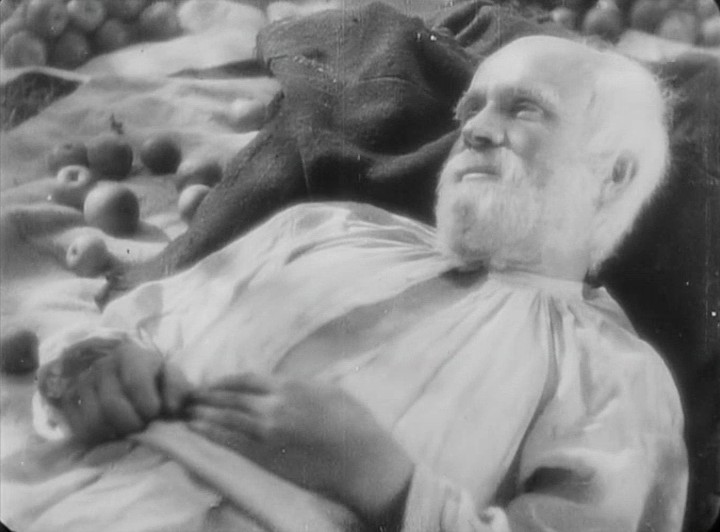

Earth, frame at 3:00
Alexander Dovzhenko · 1930 · Silent film, black and white (frame)
Free to use
Alexander Dovzhenko based the old man Semyon on his own grandfather, and he based the killing at the centre of the story on the assassination of a Soviet agent in his home district. The opening in the apple orchard was shot in soft focus by Danylo Demutsky, who had filmed Dovzhenko's two previous films. Production ran from 24 May 1929 to 25 February 1930, mostly in the Poltava region of Ukraine.